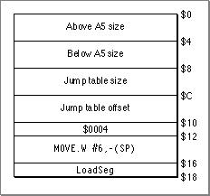

The 'CODE' 0 Resource
A CFM-68K runtime application's'CODE'0resource contains a small "start-up" jump table that loads and executes the code that launches the application. In MPW, this code is stored in the'CODE'6resource. Figure 9-4 shows the structure of a CFM-68K runtime'CODE'0resource.Figure 9-4 The
- Note
- In classic 68K applications, the
'CODE'0resource contains the application's jump table.'CODE'0resource